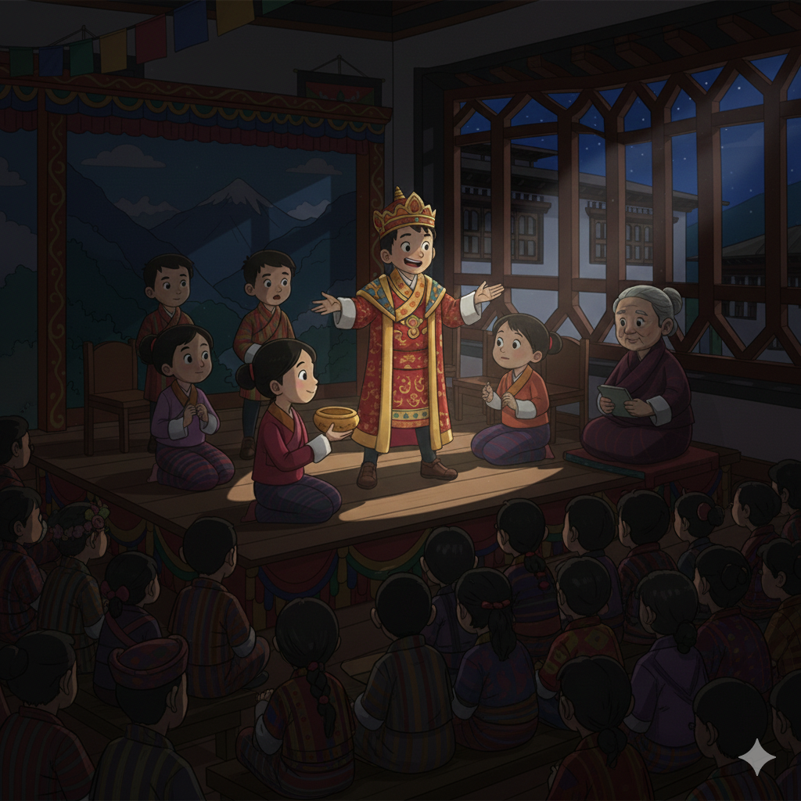

1. Drama as a Vehicle for Holistic Development 🎭
The study of International Theatre within The Royal Academy's curriculum is a fundamental tool for holistic development. By engaging with global drama, students develop empathy, public speaking mastery, and a critical understanding of ethics and human behavior, supporting all four core TRA pillars.
2. Classical Drama Aesthetics and Intellectual Rigor 🏛️
The aesthetic foundations of early Western theatre directly support Intellectual Development and the ethical foundation of TRA's curriculum. By studying classic forms, students analyze the timeless struggle between personal will and moral obligation.
Links to TRA Pillars:
- Classical Greek Tragedy: The focus on hubris (excessive pride) and the Chorus (representing community morality) provides clear case studies in consequence and ethical leadership, fostering Moral Development.
- Shakespearean/Elizabethan Drama: The complex character studies and dramatic conflicts (e.g., betrayal, justice, duty) enhance Intellectual Development by requiring detailed analysis of psychological motivation and moral ambiguity.
- Neoclassical Rationalism: This form’s emphasis on strict structure, logic, and poetic language strengthens Intellectual Development, training students to value order, clarity, and rational discourse in their own communication and conflict resolution.
3. Modern Aesthetics: Empathy and Critique 💡
20th-century theatre movements offer powerful aesthetic tools for social critique, directly aligning with TRA's focus on Social Development and Emotional Development.
Aesthetics of Critique:
- Realism and Naturalism: By stripping away spectacle to present society "as it is," these forms force students to confront issues of poverty, class, and social justice, fostering Social Development and empathy.
- Theatre of the Absurd: The use of non-sequitur and illogical actions challenges conventional meaning-making, pushing students into complex philosophical debates vital for advanced Intellectual Development.
- Epic Theatre (Brecht): Brecht's technique of distancing the audience encourages intellectual judgment rather than emotional catharsis. This aesthetic is invaluable for teaching students to objectively analyze social systems and power structures.
4. The Royal Academy (TRA) Practical Drama Program 🎬
At The Royal Academy, the practical drama curriculum ensures students move beyond passive analysis to active creation. The program integrates the study of aesthetic history with practical application, nurturing all four pillars of the curriculum.
Performance and Production:
- Original Works: Students are actively encouraged to develop and stage their own plays and short shows. This fosters original storytelling, scriptwriting skills, and the aesthetic development of personal artistic voices, essential for Emotional Development and self-expression.
- Classic Repertoire: The program includes performances of popular, canonical plays from the global stage (e.g., Shakespeare, Ibsen, contemporary playwrights). This provides hands-on experience in interpreting established dramatic aesthetics and techniques, linking Emotional Development to complex character portrayal.
- Full Production Cycle: Students manage every aspect of the show, from lighting and sound design to costume creation and marketing. This fosters Social Development through collaboration and enhances Physical Development through stage presence and technical skills.